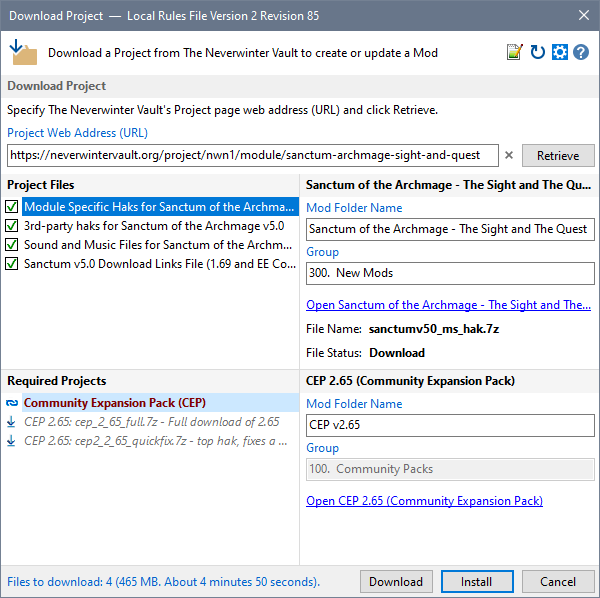
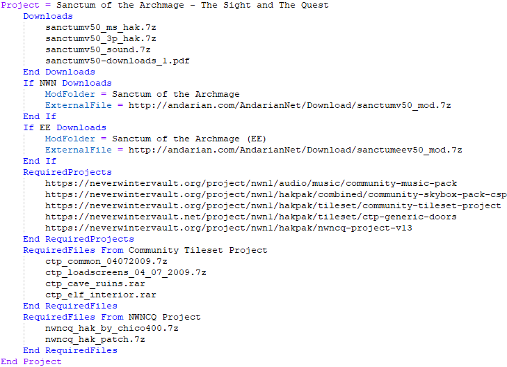
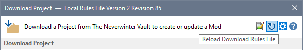
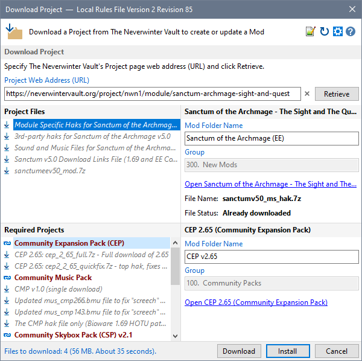

This section illustrates how we could define a rule for project Sanctum of the Archmage - The Sight and The Quest.
This is what would be downloaded without any rule defined...

Let's define a rule that downloads the correct PDF file based on the current Profile's NWN Edition and applies the documented download instructions.

Right-Click the displayed File Name to copy the name or direct link to the clipboard so you can paste the file name into your rule.
Click Save from Notepad++'s File menu when you are satisfied with the rule you have defined.
Click the Reload Download Rules File icon on the Download Project dialogue to test your changes.

You can see that the Mod file and additional required project files have been included as well as the Mod Folder name reflecting the current Profile's NWN Edition.

You should also load a Profile that uses NWN's Original Edition to ensure that the correct file and Mod Folder name are as expected.
When you are satisfied with your new rule Copy & Paste it to a post on the Project Download Rules for the Installer Tool (NIT) topic or into a feedback email.
Add Download Rule